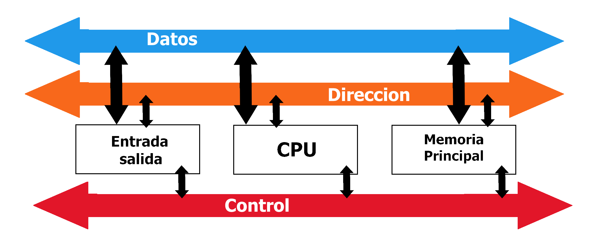

Es un conjunto lineas conductoras que intercambia datos
entre los componebtes internos de una PC.
Conecta diferentes partes del sistema: el microprocesador, el disco rígido , la memoria y los
puertos de entrada/salida, para permitir la transmisión de información.
Los datos avanzan en forma serial, es decir uno detrás del otro.
El bus tiene tres partes:
· Datos: transportan la información base.
· Direccion: lleva el destino de los datos.
· Control: administra quien accede al bus.

Con el bus, es posible que el microprocesador se mantenga
intercambiando información con una gran variedad de elementos,
sin que éstos
interfieran entre
sí y sin tener
que dedicar una
línea de comunicación individual para cada
uno.